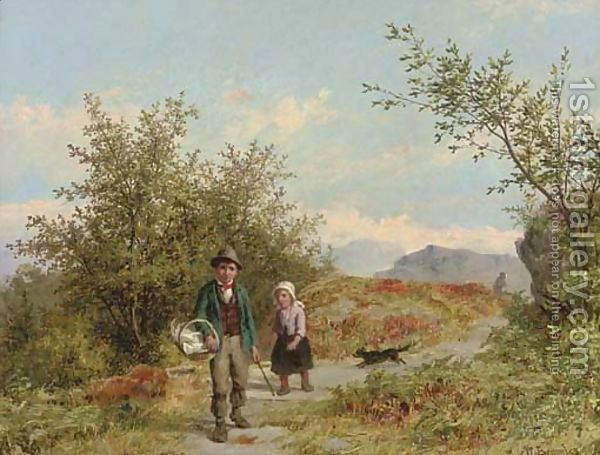

Pesachim 7 - Right after searching for chametz…
After one finishes searching for and destroying his chametz , he must also declare whatever he missed as ownerless, dust of the earth, and not belonging to him. Why is that? He just destroyed all his chametz anyway!?
One reason is that he might find a nice loaf of bread later. Since it is nice, he will desire and in his mind own it, at least for a few seconds, and thus transgress the prohibition of owning chametz. Declaring it ownerless helps.
Still, why does he need to declare the chametz that is unknown to him ownerless? He might as well say this declaration the minute he sees the bread!? - By the time Pesach comes, it is not in his power to declare it ownerless.
Here we have an interesting paradox, as Rabbi Elazar puts it. There are two things that are not in the possession of a man, yet the Torah holds him responsible as if they were his. The first one is a pit in the street. If one opens it, then even though it does not belong to him, he still pays for the damages caused by the pit. The second one is chametz on Pesach: even though one cannot use it for any purpose or derive benefit from it, so that technically it does not belong to him, the Torah still considers it as if he transgressed "No leaven should be found with you on Passover" when it is found in his domain.
Art: Searching by Valentin Walter Bromley (1848-1877)